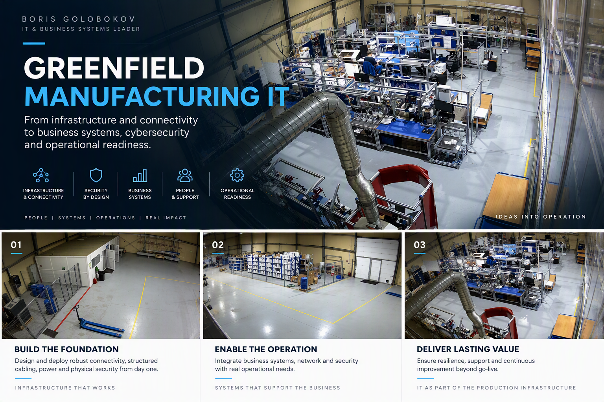
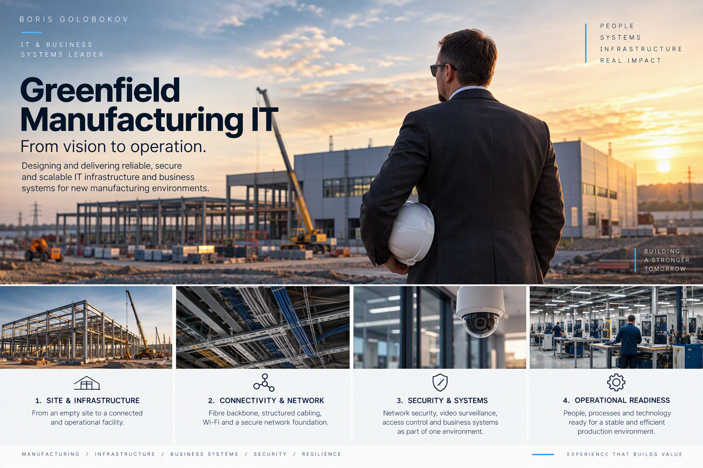

Site & Infrastructure
Structured cabling, fibre backbone, power protection, equipment locations and the physical foundations needed for a connected manufacturing environment.
From an empty site to a secure, connected and operational environment: infrastructure, business systems, cybersecurity and readiness designed as part of the production foundation.

A greenfield manufacturing project changes the role of IT very quickly. Connectivity is no longer just office infrastructure. Business systems are no longer isolated applications. Security, resilience and support become part of operational readiness.
The challenge is to build the digital foundation alongside the physical environment, production needs and operating model rather than trying to retrofit technology after everything else is finished.
Structured cabling, fibre backbone, power protection, equipment locations and the physical foundations needed for a connected manufacturing environment.
Enterprise connectivity, switching, Wi-Fi and network architecture designed around reliable access for people, systems and operational services.
Cybersecurity, physical access control and video surveillance considered as integrated layers of the overall operating environment.
ERP, collaboration, end-user workplace and business applications connected to the processes they are expected to support from day one.
Power protection, redundancy, continuity planning and operational dependencies considered before go-live rather than after the first outage.
Ownership, support, documentation, vendor coordination and handover designed so that technology can remain operational after project delivery.

Greenfield manufacturing IT requires decisions across physical infrastructure, connectivity, security, business applications and support long before the first normal operating day.
My experience includes the development and delivery of the digital foundation for a manufacturing and office environment in Kazakhstan, covering the infrastructure layers required to connect users, systems and operational services.
The focus was not on technology for its own sake, but on creating a reliable environment that could support the business as the site moved from project phase into everyday operation.
Fibre and structured cabling infrastructure, equipment locations, workplace connectivity and supporting physical systems.
Network and wireless connectivity designed to support users, workplace services and operational technology dependencies.
Network security together with video surveillance and access control as part of a broader operational environment.
Business systems, collaboration and workplace services aligned with the operating requirements of the new site.
Support model, resilience, ownership and transition from project implementation into sustainable operation.
Greenfield projects create a long list of important requirements. The leadership challenge is understanding which dependencies are critical for safe and reliable operation from day one.
That requires architecture, delivery, vendors, support and business priorities to be treated as one system rather than independent workstreams.
Infrastructure becomes resilience. Systems become operations. IT becomes part of the business.
A practical perspective on why operational readiness matters more than simply completing a technology checklist before go-live.
LinkedIn insight · publishing 28 October 2026Explore a structured advisory approach covering IT infrastructure, business systems, security, dependencies and operational readiness.